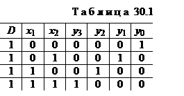
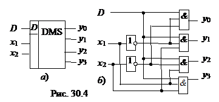
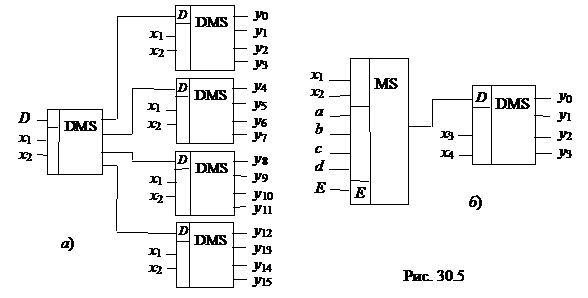

4. ДЕМУЛЬТИПЛЕКСОР
Демультиплексор (DMS) выполняет функцию, обратную функции мультиплексора, т. е. производит коммутацию одного входного сигнала на 2n выходов, где n – число адресных входов хi. Он осуществляет преобразование информации из последовательной формы (последовательно-параллельной) в параллельную. Демультиплексор имеет один информационный вход D и несколько выходов, причем вход подключается к выходу уi, имеющему заданный адрес.

В качестве примера на рис. 30.4, а
дано условное графическое обозначение демультиплексора, имеющего четыре выхода,
закон функционирования которого задан (табл. 30.1). Пользуясь табл. 30.1, запишем
переключательные функции для выхода устройства:

Функциональная схема демультиплексора, реализующая эти выражения, приведена на
рис. 30.4, б.
Если общее число выходов разрабатываемого устройства превышает
имеющиеся в выпускаемых интегральных микросхемах, то используют параллельное
подключение нескольких схем. На рис. 30.5, а показано демультиплексорное дерево, построенное на
мультиплексорах с четырьмя выходами.
Объединяя мультиплексор с демультиплексором, получают комбинационное
устройство, в котором по заданным адресам один из входов подключается к одному
из его выходов (рис. 30.5, б).
